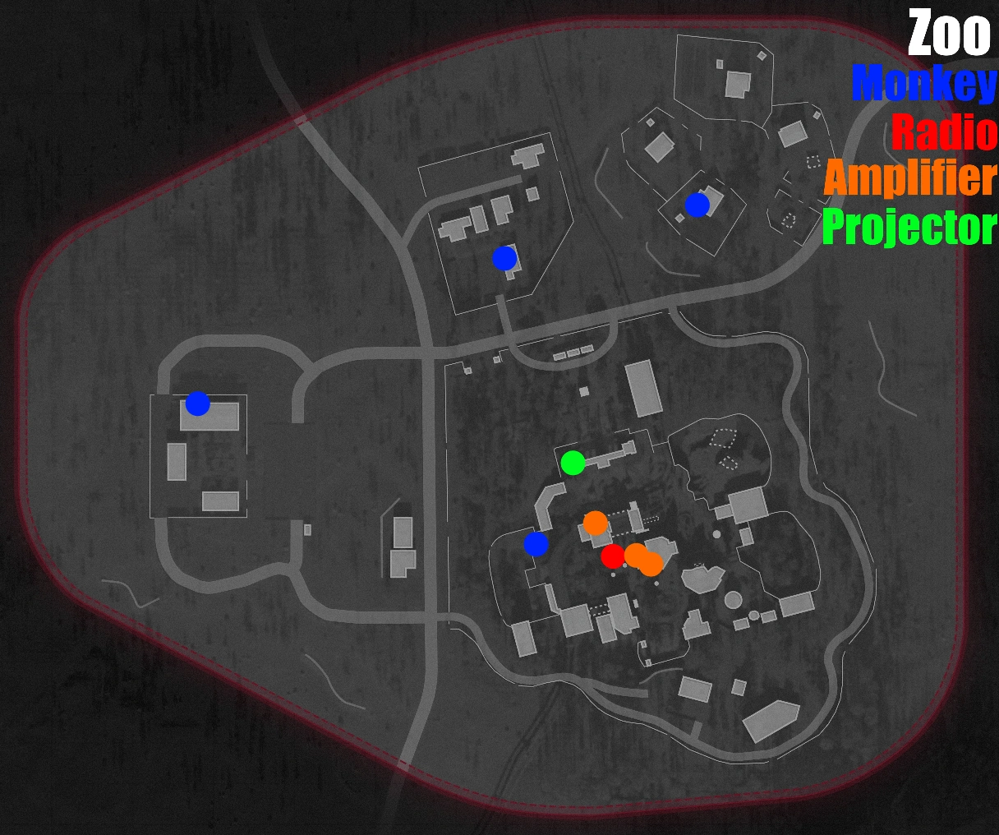
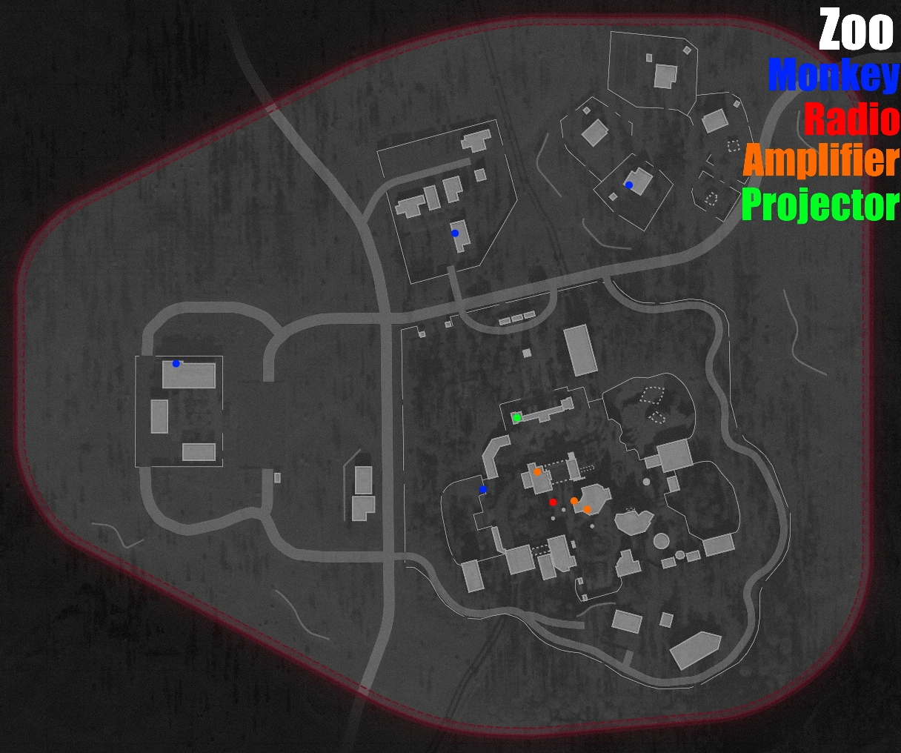
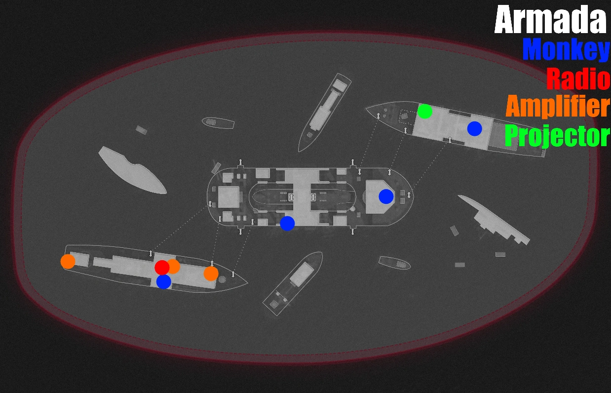
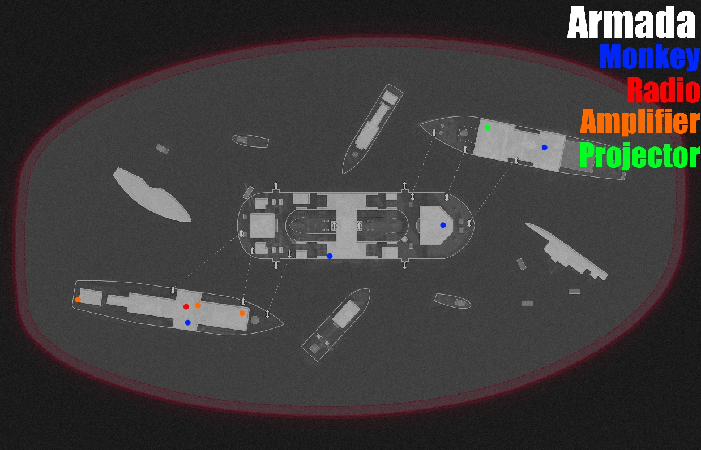
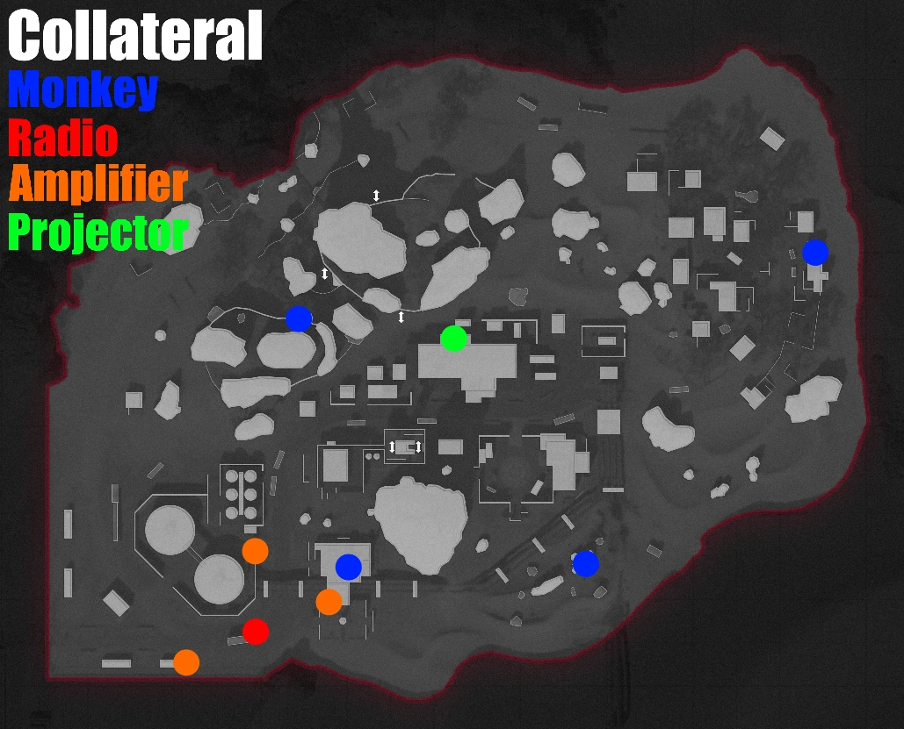
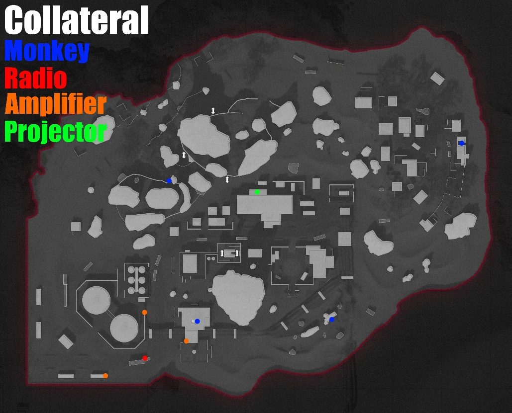

Get to Round 3 to activate the Easter Egg
Find the Radio, and Activate it
Find the 3 Amplifiers and set them to the same Frequency as the Radio
Go back to the Radio and Activate it to Listen to the Full Message
Pick up the Beacon Radio, apply it to the Beacon, then Warp to the Next Map
Find the Monkey with the M Next to it and shoot it to get the Microfilm
Take the Microfilm to the Projector (If you're on Ruka, you have to Warp to the Next Map and Find the Projector)
Advance through the slides until Maxis tells you to travel to Ruka
Warp to Ruka using the Beacon
Go into the Elevator that's marked as the Primary Objective and go Down
Go to Silo A, and Lift the Lockdown using the Marked Switch on the Lower Level
Collect all 3 Launch Keys (They can be done in any Order)
-Key 1: Go to the Hub area and find the Door Leading into Silo C and Interact with the body to Spawn a Mimic, Kill the Mimic and Collect the Key
-Key 2: Go to Silo B and Activate the Aetherium Harvester on the Bottom Level of the Silo, then Shoot The Aetherium Crytals, Pick up the Aetherium Chunks and
Deposit them into the Harvester. Pick up the Aetherium Canister and Head to Silo D, Blast the Jellyfish from the Top Level of the Stairs (1 Flight down
from the Top Level of the Silo) The Jellyfish will suck you in, Collect the Key
-Key 3: Go to Silo A and Collect the Essence Trap from the Circular Hallway on the Bottom Level of the Silo, find the Spectral Monkey and throw the trap on the
ground in front of it, wait until it says Target in Range, then Activate it. Collect the Key from the Trap (The Monkey will run into another vent if you get
too close)
Go to one of the Silos and try Inserting the Key into the Launch Controls on the Top Level until you find the right one, Repeat until you get all 3 in the Right Order
Exit the Bunker using the Stairs in the Main Hub
Shoot Legion in the Chest until you Break His Armor, and he Kneels Down
Shoot the Orbs that Pop out, when you Break them he loses 33% of his Health
Once you Kill Legion, the Cutscene will Play
Below is each map marked with the Locations of All of the Necessary Items
The Left Map shows the General Area, and the Right shows the Precise Area
You can click the Map to enlarge it
Full Size Images


 
 
 